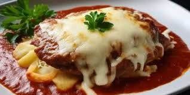

1 Faça a massa: no copo do liquidificador, coloque o leite, o ovo, a margarina, a
farinha de
trigo, o Tempero , o sal e o fermento, e bata em velocidade média por 1 minuto, ou até
obter
uma mistura homogênea.
2 Leve uma frigideira média (16 cm de diâmetro), untada com um fio de óleo, ao fogo
baixo
para aquecer, cubra a superfície com uma concha média da massa e deixe por 1 minuto, ou
até
as laterais se soltarem e o centro estar cozido. Vire com o auxílio de uma espátula e
deixe
por mais 1 minuto. Frite o restante da massa, repondo o óleo da frigideira quando
necessário. Reserve.
3 Prepare o recheio: em uma panela média, coloque o óleo e leve ao fogo alto para
aquecer.
Junte a cebola e refogue por 3 minutos, ou até ficar transparente. Adicione a carne, o
Tempero , o sal, e frite por 10 minutos, ou até dourar. Acrescente o extrato de tomate,
misture e retire do fogo.
4 Em uma das extremidades das massas, disponha o recheio, e enrole-as como panquecas.
Sirva
em seguida acompanhada do molho de sua preferência.
Escondidinho de Carne Moída
INGREDIENTES
Carne
2 colheres (sopa) de manteiga sem sal
1 cebola média picada
400 g de patinho bovino moído
1 sachê de Tempero Vermelho
1 pitada de sal
2 colheres (sopa) de cheiro-verde picado
Purê
600 g de mandioquinha cozida e amassada
1 xícara (chá) de leite (200 ml)
1 colher (sopa) de manteiga sem sal
1 sachê de Tempero Amarelo
1 pitada de sal
Modo de Preparo
Prepare a carne: em uma panela média, coloque a manteiga e leve ao fogo médio para derreter.
Junte a cebola e refogue por 3 minutos, ou até ficar transparente. Acrescente a carne moída,
o Tempero SAZÓN® e o sal, e frite por 10 minutos, ou até mudar completamente de cor e o
líquido formado secar. Retire do fogo, coloque o cheiro verde e reserve.
Prepare o purê: em uma panela média, coloque a mandioquinha, o leite, a manteiga, o Tempero
vermelho, o sal e misture. Leve ao fogo médio, mexendo sempre, até ficar homogêneo.
Retire do fogo e monte o escondidinho em potes para marmitas, colocando a carne moída
embaixo e o purê por cima, alisando a superfície com as costas de uma colher.
Reserve congelado até o consumo.
Almôndegas ao Molho de Tomates
INGREDIENTES
400 g de alcatra bovina moída
1 ovo
2 colheres (sopa) de farinha de rosca (20 g)
meia xícara (chá) de leite (100 ml)
2 pitadas de pimenta-do-reino moída
meia colher (chá) de sal
meia colher (chá) de AJI-NO-MOTO®
2 tomates médios bem maduros, sem sementes, cortado em 4 partes (490 g)
3 colheres (sopa) de Azeite de Oliva TERRANO™
meia cebola média picada (75 g)
1 dente de alho picado
MODO DE PREPARO
Em uma tigela grande, coloque a carne moída, o ovo, a farinha de rosca, o leite, a
pimenta-do-reino, metade do sal e metade do AJI-NO-MOTO®, misture e modele 20 esferas de 5
cm de diâmetro cada uma.
Disponha em uma assadeira média untada, cubra com papel-alumínio, e leve à geladeira para
tomar gosto por 20 minutos. Retire da geladeira e leve ao forno médio (180 graus),
preaquecido, por 40 minutos. Retire do forno, remova o papel-alumínio e deixe por mais 10
minutos, ou até que fiquem levemente douradas. Retire do forno e reserve aquecido.
Enquanto isso, no copo do liquidificador, coloque o tomate e bata, no modo pulsar, por 1
minuto, ou até obter um suco.
Em uma panela média, coloque o Azeite TERRANO™ e leve ao fogo alto para aquecer. Junte a
cebola e o alho, e refogue por 2 minutos, ou até que dourem. Acrescente o suco de tomate, o
sal e o AJI-NO-MOTO® restantes, e cozinhe em fogo baixo, por 5 minutos, mexendo de vez em
quando, ou até mudar de cor.
Regue as almôndegas com o molho e sirva em seguida.
Bife à Parmegiana

INGREDIENTES
5 bifes de patinho bovino (500 g)
1 sachê de Tempero Vermelho
2 pitadas de sal
5 colheres (sopa) de farinha de trigo
2 ovos ligeiramente batidos
meia xícara (chá) de farinha de rosca
1 caixinha de polpa de tomate (520 g)
250 g de muçarela fatiada
MODO DE PREPARO
Em uma tigela, coloque os bifes, o Tempero e 1 pitada de sal, e misture. Passe os
bifes pela farinha de trigo, pelo ovo e, por último, pela farinha de rosca. Frite-os em
imersão, em óleo quente, por 2 minutos, ou até dourarem. Retire com o auxílio de uma
escumadeira e escorra em papel toalha.
Em um refratário grande, coloque metade da polpa de tomate já misturada ao sal restante,
distribua os bifes, regue com a polpa restante e cubra com a muçarela. Leve ao forno médio
(180 graus), preaquecido, por 5 minutos, ou até a muçarela derreter.
Retire do forno e sirva em seguida.
CARNE DE PANELA COM BATATA
INGREDIENTES
1 colher (sopa) de óleo
1 cebola média picada
3 dentes de alho picados
1 kg de miolo de acém cortado em cubos médios
3 tomates picados
2 sachês de Tempero Vermelho
2 pitadas de sal
2 xícaras (chá) de água (400 ml)
2 batatas médias, em cubos grandes (400 g)
1 colher (sopa) de salsa picada
MODO DE PREPARO
Em uma panela de pressão, coloque o óleo e leve ao fogo alto para aquecer. Junte a cebola e
o alho e refogue por 2 minutos ou até que fiquem transparentes.
Acrescente a carne, o tomate, o Tempero , o sal e a água, tampe a panela e deixe cozinhar
por 30 minutos após o início da fervura.
Espere a pressão ceder, acrescente a batata, e cozinhe por mais 10 minutos com a panela
aberta. Retire do fogo, salpique com salsa, monte as marmitas, armazene na geladeira por até
3 dias ou sirva em seguida.
DICA
1. Armazene a marmita em lancheira térmica por até 4 horas. 2. Sirva acompanhado com o qué
desejar
Carne Desfiada na Moranga
INGREDIENTES
1 colher (sopa) de óleo
700 g de paleta bovina, limpa e sem osso, cortada em cubos médios
1 litro de água
1 abóbora moranga pequena (3 kg)
1 envelope de VONO® Chef Creme de Cebola com Sódio Reduzido
1 colher (sopa) de salsa picada
MODO DE PREPARO
Em uma panela de pressão, coloque o óleo e leve ao fogo alto para aquecer. Junte a carne e
frite por 10 minutos, ou até dourar. Acrescente a água, tampe a panela e deixe cozinhar em
fogo médio, por 30 minutos após o início da fervura.
Enquanto isso, corte a tampa da moranga e retire as sementes. Disponha em um refratário
próprio e leve ao micro-ondas, em potência alta, por 20 minutos, ou até a polpa amolecer.
Com o auxílio de uma colher, raspe a polpa da abóbora, deixando 1 cm de borda. Escorra a
polpa para tirar o excesso de líquido e reserve.
Desligue o fogo da panela, espere a pressão ceder e desfie a carne, reservando o caldo do
cozimento na própria panela.
Volte a carne desfiada, adicione a polpa da moranga reservada e a VONO®, e cozinhe em fogo
médio, mexendo sempre, por mais 5 minutos, ou até encorpar.
Retire do fogo, recheie a moranga, salpique a salsa e sirva em seguida.
DICA
Se preferir, substitua a paleta por coxão-duro ou peito bovino.
ROCAMBOLE DE CARNE
INGREDIENTES
500 g de patinho bovino moído
1 embalagem de SAZÓN® Tempera & Dá Liga Sabor Tradicional
1 tomate médio cortado em rodelas finas
8 fatias de peito de peru defumado fatiado (100 g)
8 fatias de muçarela (150 g)
1 colher (sopa) de manteiga sem sal, derretida
MODO DE PREPARO
Em uma tigela grande, coloque a carne moída e o Tempera & Dá Liga, e misture.
Com o auxílio de um rolo, abra a carne entre dois pedaços de filme-plástico, no formato de
um retângulo (25 x 35 cm).
Retire o filme-plástico de cima e espalhe por toda a superfície as rodelas do tomate, o
peito de peru e a muçarela. Com o auxílio do plástico de baixo, enrole o rocambole pelo lado
maior do retângulo e disponha-o em uma assadeira retangular grande, untada.
Pincele a manteiga pela superfície do rocambole, cubra com papel-alumínio e leve ao forno
médio (180 graus), preaquecido, por 30 minutos.
Remova o papel-alumínio e volte ao forno por mais 10 minutos, ou até dourar.